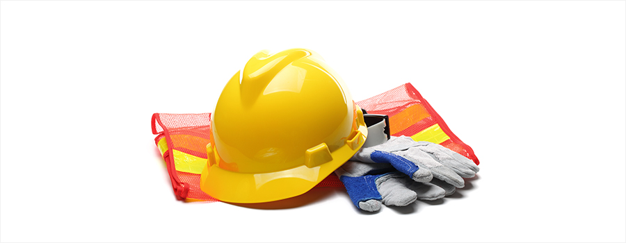

이번 호에서는 건설업의 산업재해 예방에 관한 규정 가운데 나머지 부분인 안전보건협의체 등의 구성ㆍ운영에 관한 건설업 특례와 기계ㆍ기구 등에 대한 건설공사도급인의 안전조치 및 그 밖의 고용형태에서의 산업재해 예방에 관한 규정을 살펴보기로 한다.
- 제75조(안전 및 보건에 관한 협의체 등의 구성·운영에 관한 특례)
-
- ①대통령령으로 정하는 규모의 건설공사의 건설공사도급인은 해당 건설공사 현장에 근로자위원과 사용자위원이 같은 수로 구성되는 안전 및 보건에 관한 협의체(이하 “노사협의체”라 한다)를 대통령령으로 정하는 바에 따라 구성ㆍ운영할 수 있다.
- ②건설공사도급인이 제1항에 따라 노사협의체를 구성ㆍ운영하는 경우에는 산업안전보건위원회 및 제64조제1항제1호에 따른 안전 및 보건에 관한 협의체를 각각 구성ㆍ운영하는 것으로 본다.
- ③제1항에 따라 노사협의체를 구성ㆍ운영하는 건설공사도급인은 제24조제2항 각 호의 사항에 대하여 노사협의체의 심의ㆍ의결을 거쳐야 한다. 이 경우 노사협의체에서 의결되지 아니한 사항의 처리방법은 대통령령으로 정한다.
- ④노사협의체는 대통령령으로 정하는 바에 따라 회의를 개최하고 그 결과를 회의록으로 작성하여 보존하여야 한다.
- ⑤노사협의체는 산업재해 예방 및 산업재해가 발생한 경우의 대피방법 등 고용노동부령으로 정하는 사항에 대하여 협의하여야 한다.
- ⑥노사협의체를 구성ㆍ운영하는 건설공사도급인ㆍ근로자 및 관계수급인ㆍ근로자는 제3항에 따라 노사협의체가 심의ㆍ의결한 사항을 성실하게 이행하여야 한다.
- ⑦노사협의체에 관하여는 제24조제5항 및 제6항을 준용한다. 이 경우 "산업안전보건위원회"는 "노사협의체"로 본다.
01의의
본조는 산업안전보건위원회(제24조) 또는 사내도급의 경우에 있어서 원하청 사업주 사이의 안전보건 협의체(제64조제1항제1호)에 관한 사항을 도급에 의하여 사업이 진행되는 건설공사의 특성을 반영하여 규정한 것이다. 그러므로 기본적으로 산업안전보건위원회에 관한 규정이 적용된다.
02건설공사 노사협의체 구성 대상 공사
공사금액이 120억원(토목공사업은 150억원) 이상인 건설공사의 건설공사도급인은 해당 건설공사 현장에 안전 및 보건에 관한 협의체(이하 ‘노사협의체’라 한다)를 구성·운영할 수 있다(법 제75조제1항, 시행령 제63조). 노사협의체를 구성·운영하는 경우에는 산업안전보건위원회 및 도급사업에 있어서의 ‘안전 및 보건에 관한 협의체’를 각각 구성·운영하는 것으로 본다(법 제75조제2항).
03건설공사 노사협의체의 구성
근로자위원과 사용자위원 같은 수로 구성한다(법 제75조제1항, 시행령 제64조). 사업주는 노사협의체 위원에게 직무 수행과 관련한 사유로 불리한 처우를 해서는 아니 된다(법 제75조제7항).
- (1)근로자위원
- ①도급 또는 하도급 사업을 포함한 전체 사업의 근로자대표
- ②근로자대표가 지명하는 명예산업안전감독관 1명. 다만, 명예감독관이 위촉되어 있지 아니한 경우에는 근로자대표가 지명하는 해당 사업장 근로자 1명
- ③공사금액이 20억원 이상인 공사의 관계수급인의 각 근로자대표
- (2)사용자위원
- ①도급 또는 하도급 사업을 포함한 전체 사업의 대표자
- ②안전관리자 1명
- ③보건관리자 1명(보건관리자 선임대상 건설업(공사금액 800억원 이상)으로 한정)
- ④공사금액이 20억원 이상인 공사의 관계수급인의 각 대표자
- (3)근로자위원과 사용자위원은 합의하여
- ①노사협의체에 공사금액이 20억원 미만인 공사의 관계수급인 및 근로자대표를 위원으로 위촉할 수 있고(시행령 제64조제2항),
- ②「건설기계관리법」 제3조제1항에 따라 등록된 건설기계를 직접 운전하는 사람을 노사협의체에 참여하도록 할 수 있다(시행령 제64조제3항).
04건설공사 노사협의체의 기능
- (1)심의·의결 사항
산업안전보건위원회의 심의·의결사항과 같다(법 제75조제3항, 제24조제2항). 노사협의체는 법, 법에 따른 명령, 단체협약, 취업규칙 및 안전보건관리규정에 반하는 내용으로 심의·의결해서는 아니 된다(법 제75조제7항).
- ① 산업재해 예방계획의 수립에 관한 사항
- ② 안전보건관리규정의 작성 및 변경에 관한 사항
- ③ 근로자의 안전보건교육에 관한 사항
- ④ 작업환경측정 등 작업환경의 점검 및 개선에 관한 사항
- ⑤ 근로자의 건강진단 등 건강관리에 관한 사항
- ⑥ 산업재해에 관한 통계의 기록 및 유지에 관한 사항
- ⑦ 중대재해의 원인조사 및 재발 방지대책 수립에 관한 사항
- ⑧ 유해·위험한 기계·기구와 그 밖의 설비를 도입한 경우 안전보건조치에 관한 사항
- (2)협의사항(법 제75조제5항, 시행규칙 제93조)
- ①산업재해 예방방법 및 산업재해가 발생한 경우의 대피방법
- ②작업의 시작시간 및 작업 및 작업장 간의 연락방법
- ③그 밖의 산업재해 예방과 관련된 사항
05건설공사 노사협의체의 운영
- (1)노사협의체의 회의는 정기회의와 임시회의로 구분하되, 정기회의는 2개월마다 노사협의체의 위원장이 소집하며, 임시회의는 위원장이 필요하다고 인정할 때에 소집한다. 노사협의회의 위원장은 위원 중에서 호선하고, 이 경우 근로자위원과 사용자위원 중 각1명을 공동위원장으로 선출할 수 있다(시행령 제65조제1항).
- (2)노사협의체 위원장의 선출, 노사협의체의 회의, 노사협의체에서 의결되지 않은 사항에 대한 처리방법 및 회의 결과 등의 공지에 관하여는 산업안전보건위원회 관련 규정을 준용한다(시행령 제65조제2항, 제36조, 제37조제2항부터 제4항까지, 제38조 및 제39조).
06심의·의결 사항의 이행
노사협의체를 구성·운영하는 건설공사도급인·근로자 및 관계수급인·근로자는 노사협의체가 심의·의결한 사항을 성실하게 이행하여야 한다(법 제75조제6항).
07벌칙
법 제75조제6항을 위반하여 노사협의체가 심의·의결한 사항을 성실하게 이행하지 않은 건설공사도급인·근로자 및 관계수급인·근로자에게는 500만원 이하의 과태료를 부과한다(법 제175조제5항제1호).
- 제76조(기계·기구 등에 대한 건설공사도급인의 안전조치)
-
- 건설공사도급인은 자신의 사업장에서 타워크레인 등 대통령령으로 정하는 기계ㆍ기구 또는 설비 등이 설치되어 있거나 작동하고 있는 경우 또는 이를 설치ㆍ해체ㆍ조립하는 등의 작업이 이루어지고 있는 경우에는 필요한 안전조치 및 보건조치를 하여야 한다.
01의의
건설현장의 안전을 총괄하여 관리하는 건설공사도급인으로 하여금 영세소규모 사업주가 다루는 타워크레인 등 재해가 많이 발생하는 기계ㆍ기구 또는 설비 등에 대하여 설치부터 해체에 이르기까지 필요한 조치를 하게 한 제도이다.
02안전조치를 하여야 할 기계·기구
①타워크레인, ②건설용 리프트, ③항타기(해머나 동력을 사용하여 말뚝을 박는 기계) 및 항발기(박힌 말뚝을 빼는 기계)(시행령 제66조)
03건설공사도급인이 해야 하는 조치
해당 기계ㆍ기구 또는 설비가 설치되어 있거나 작동하고 있는 경우 또는 이를 설치ㆍ해체ㆍ조립하는 등의 작업을 하는 경우에는 다음 사항을 확인 또는 조치하여야 한다(시행규칙 제94조).
- ① 작업시작 전 기계‧기구 등을 소유 또는 대여하는 자와 합동으로 안전점검 실시
- ② 작업을 수행하는 사업주의 작업계획서 작성 및 이행여부 확인(타워크레인, 항타기 및 항발기에 한함)
- ③ 작업자가 자격‧면허‧경험 또는 기능(제140조제1항)을 가지고 있는지 여부 확인(타워크레인, 항타기 및 항발기에 한함)
- ④ 그 밖에 해당 기계ㆍ기구 또는 설비 등에 대하여 안전보건규칙에서 정하고 있는 안전보건조치
- ⑤ 기계‧기구 등의 결함, 작업방법과 절차 미준수, 강풍 등 이상 환경으로 인하여 작업수행 시 현저한 위험이 예상되는 경우 작업중지 조치
04벌칙
법 제76조를 위반하여 건설공사도급인이 해당 기계·기구 또는 설비 등에 대하여 필요한 안전조치 및 보건조치를 이행하지 아니하면 3년 이하의 징역 또는 3천만원 이하의 벌금에 처한다(법 제169조제1호).
제4절 그 밖의 고용형태에서의 산업재해 예방
- 제77조(특수형태근로종사자에 대한 안전조치 및 보건조치 등)
-
- ①계약의 형식에 관계없이 근로자와 유사하게 노무를 제공하여 업무상의 재해로부터 보호할 필요가 있음에도 「근로기준법」 등이 적용되지 아니하는 사람으로서 다음 각 호의 요건을 모두 충족하는 사람(이하 “특수형태근로종사자”라 한다)의 노무를 제공받는 자는 특수형태근로종사자의 산업재해 예방을 위하여 필요한 안전조치 및 보건조치를 하여야 한다.
- 1. 대통령령으로 정하는 직종에 종사할 것
- 2. 주로 하나의 사업에 노무를 상시적으로 제공하고 보수를 받아 생활할 것
- 3. 노무를 제공할 때 타인을 사용하지 아니할 것
- ②대통령령으로 정하는 특수형태근로종사자로부터 노무를 제공받는 자는 고용노동부령으로 정하는 바에 따라 안전 및 보건에 관한 교육을 실시하여야 한다.
- ③정부는 특수형태근로종사자의 안전 및 보건의 유지·증진에 사용하는 비용의 일부 또는 전부를 지원할 수 있다.
01의의
근로자와 유사하게 노무를 제공하여 업무상의 재해로부터 보호할 필요가 있음에도 근로기준법 등이 적용되지 아니하여 산업안전보건법 상의 보호를 받지 못하는 자에게 산업재해 예방을 위하여 필요한 안전조치 및 보건조치를 하도록 한 규정이다.
02특수형태근로자
업무상의 재해로부터 보호할 필요가 있음에도 근로기준법 등이 적용되지 아니하는 자로서 (1) 주로 하나의 사업에 노무를 상시적으로 제공하고 보수를 받아 생활할 것, (2) 노무를 제공할 때 타인을 사용하지 아니할 것, 이상 두 요건을 충족하는 다음 직종에 종사하는 자를 말한다(시행령 제67조).
- ① 보험설계사 및 전업 우체국보험모집인
- ② 건설기계(27종)를 직접 운전하는 사람
- ③ 학습지 방문강사, 교육 교구 방문강사, 그 밖에 회원의 가정 등을 직접 방문하여 아동이나 학생 등을 가르치는 사람
- ④ 골프장 캐디
- ⑤ 택배원인 사람으로서 택배사업(소화물을 집화ㆍ수송 과정을 거쳐 배송하는 사업)에서 집화 또는 배송 업무를 하는 사람
- ⑥ 택배원인 사람으로서 하나의 퀵서비스업자로부터 업무를 의뢰받아 배송 업무를 하는 사람
- ⑦ 대출모집인
- ⑧ 신용카드회원 모집인
- ⑨ 대리운전 업무를 하는 사람
- ⑩ 방문판매업무를 하는 사람
- ⑪ 대여 제품 방문점검원
- ⑫ 가전제품 설치 및 수리원으로서 가전제품을 배송, 설치 및 시운전하여 작동상태를 확인하는 사람
- ⑬ 화물차주로서 다음 각 목의 어느 하나에 해당하는 사람
- 가. 특수자동차로 수출입 컨테이너를 운송하는 사람
- 나. 특수자동차로 시멘트를 운송하는 사람
- 다. 피견인자동차나 일반형 화물자동차로 철강재를 운송하는 사람
- 라. 일반형 화물자동차나 특수용도형 화물자동차로 위험물질을 운송하는 사람
- ⑭ 소프트웨어사업에서 노무를 제공하는 소프트웨어기술자
03안전보건조치 의무
특수형태근로자로부터 노무를 제공받는 자는 특수형태근로종사자의 산업재해 예방을 위하여 필요한 안전조치 및 보건조치를 하여야 한다(법 제77조제1항).
04교육실시 의무
- (1)교육대상자
특수형태근로자 중 5개 직종, 즉 ②건설기계운전자, ④골프장캐디, ⑤택배원, ⑥퀴서비스기사, ⑨대리운전자, ⑩방문판매자, ⑪방문점검원, ⑫가전제품설치수리원, ⑬운송종사자로부터 노무를 제공받는 자는 안전 및 보건에 관한 교육을 실시하여야 한다(법 제77조제2항, 시행령 제68조).
- (2)교육시간(시행규칙 제95조제1항, 시행규칙 별표4)
| 교육과정 |
교육시간 |
| 가. 최초 노무제공 시 교육 |
2시간 이상(단기간 작업 또는 간헐적 작업에 노무를 제공하는 경우 1시간 이상 실시, 특별교육을 실시한 경우는 면제) |
| 나. 특별교육 |
16시간 이상(최초 작업에 종사하기 전 4시간 이상 실시하고 12시간은 3개월 이내에서 분할하여 실시가능) |
| 단기간 작업 또는 간헐적 작업인 경우에는 2시간 이상 |
- (3)교육내용
최초 노무 제공 시 아래의 내용 중 특수형태근로종사자의 직무에 적합한 내용을 교육해야 한다. 특별교육은 대상 작업별로 39종이 정해져 있다(시행규칙 별표5).
- - 산업안전 및 사고 예방에 관한 사항
- - 산업보건 및 직업병 예방에 관한 사항
- - 건강증진 및 질병 예방에 관한 사항
- - 유해·위험 작업환경 관리에 관한 사항
- - 산업안전보건법령 및 산업재해보상보험 제도에 관한 사항
- - 직무스트레스 예방 및 관리에 관한 사항
- - 직장 내 괴롭힘, 고객의 폭언 등으로 인한 건강장해 예방 및 관리에 관한 사항
- - 기계·기구의 위험성과 작업의 순서 및 동선에 관한 사항
- - 작업 개시 전 점검에 관한 사항
- - 정리정돈 및 청소에 관한 사항
- - 사고 발생 시 긴급조치에 관한 사항
- - 물질안전보건자료에 관한 사항
- - 교통안전 및 운전안전에 관한 사항
- - 보호구 착용에 관한 사항
05정부의 비용지원
정부는 특수형태근로종사자의 안전 및 보건의 유지·증진에 사용하는 비용의 일부 또는 전부를 지원할 수 있다(법 제77조제3항). 사업주의 비용부담에 따른 제도정착의 애로를 완화하고 정책의 실효성을 담보하기 위하여 정부 지원의 근거를 둔 것이다.
06벌칙
(1) 법 제77조제1항을 위반하여 특수형태근로종사자에 대한 안전조치 및 보건조치를 하지 아니한 자에게는 1천만원 이하의 과태료를 부과한다(법 제175조제4항제3호).
(2) 법 제77조제2항을 위반하여 안전 및 보건에 관한 교육을 실시하지 아니한 자에게는 500만원 이하의 과태료를 부과한다(제175조제5항제1호).
07참고사항
특수형태근로자에 대해서는 산업안전보건법이 적용되는 것과 같은 이유로 산재보험이 적용된다(산업재해보상보험법 제125조(특수형태근로종사자에 대한 특례)).
- 제78조(배달종사자에 대한 안전조치)
-
- 「이동통신단말장치 유통구조 개선에 관한 법률」 제2조제4호에 따른 이동통신단말장치로 물건의 수거ㆍ배달 등을 중개하는 자는 그 중개를 통하여 「자동차관리법」 제3조제1항제5호에 따른 이륜자동차로 물건을 수거ㆍ배달 등을 하는 사람의 산업재해 예방을 위하여 필요한 안전조치 및 보건조치를 하여야 한다.
01의의
근로기준법상의 근로자가 아니면서 사고가 많이 발생하는 직종의 하나가 이륜차로 물건을 수거·배달하는 작업이다. 본조는 배달앱 등 이동통신 단말장치로 물건의 수거나 배달을 중개하는 자에게 이륜자동차로 물건을 수거하거나 배달하는 자의 산업재해 예방을 위한 안전보건 조치를 하도록 한 규정이다.
02배달종사자 보호조치
- (1) 산재예방조치
이동통신단말장치*로 물건의 수거·배달을 중개하는 자는 이륜자동차(오토바이)로 물건을 수거·배달 등을 하는 자의 산재예방에 필요한 안전조치 및 보건조치**를 해야 한다(법 제78조). 양자 사이에 사용종속 관계가 성립하지 않아도 마찬가지이다.
*이동통신단말장치: 이용자가 이동통신서비스를 이용하기 위하여 필요한 단말장치.
**과속 배달(배달시간 제한) 금지, 운전면허 소지자 확인 등.
- (2) 안전보건규칙상의 안전조치
- ① 보호구 착용지시 및 착용 의무: 사업주는 물건을 운반하거나 수거ㆍ배달하기 위하여 이륜자동차를 운행하는 작업에 승차용 안전모를 작업하는 근로자 수 이상으로 지급하고 착용하도록 하여야 한다. 보호구를 받거나 착용지시를 받은 근로자는 그 보호구를 착용하여야 한다(안전보건규칙 제32조제1항제10호, 제2항).
- ② 탑승의 제한: 사업주는 전조등, 제동등, 후미등, 후사경 또는 제동장치가 정상적으로 작동되지 아니하는 이륜자동차에 근로자를 탑승시켜서는 아니 된다(안전보건규칙 제86조제11항)
03벌칙
법 제78조를 위반하여 배달종사자에 대한 안전조치 및 보건조치를 하지 아니한 자에게는 1천만원 이하의 과태료를 부과한다(법 제175조제4항제3호).
04참고사항
- (1) 사업주의 범위와 의무
산업안전보건법상 사업주의 의무를 선언한 제4조는 사업주에 ‘제77조에 따른 특수형태근로종사자로부터 노무를 제공받는 자’와 ‘제78조에 따른 물건의 수거·배달 등을 중개하는 자’를 포함하고 있다. 사업주의 의무는 다음과 같다(법 제4조).
- ① 법과 이 법에 따른 명령으로 정하는 산업재해 예방을 위한 기준의 준수
- ② 근로자의 신체적 피로와 정신적 스트레스 등을 줄일 수 있는 쾌적한 작업환경의 조성 및 근로조건 개선
- ③ 해당 사업장의 안전 및 보건에 관한 정보를 근로자에게 제공
- (2) 근로자의 범위와 의무
산업안전보건법상 근로자의 의무를 선언한 제6조는 근로자에 ‘제77조에 따른 특수형태근로종사자’와 ‘제78조에 따른 물건의 수거·배달 등을 하는 자’를 포함하고 있다. 근로자는 법과 이 법에 따른 명령으로 정하는 산업재해 예방을 위한 기준을 지켜야 하며, 사업주, 근로감독관, 안전보건공단 등 관계인이 실시하는 산업재해 예방에 관한 조치에 따라야 한다(법 제6조).
- 제79조(가맹본부의 산업재해 예방 조치)
-
- ①「가맹사업거래의 공정화에 관한 법률」 제2조제2호에 따른 가맹본부 중 대통령령으로 정하는 가맹본부는 같은 조 제3호에 따른 가맹점사업자에게 가맹점의 설비나 기계, 원자재 또는 상품 등을 공급하는 경우에 가맹점사업자와 그 소속 근로자의 산업재해 예방을 위하여 다음 각 호의 조치를 하여야 한다.
- 1. 가맹점의 안전 및 보건에 관한 프로그램의 마련ㆍ시행
- 2. 가맹본부가 가맹점에 설치하거나 공급하는 설비ㆍ기계 및 원자재 또는 상품 등에 대하여 가맹점사업자에게 안전 및 보건에 관한 정보의 제공
- ②제1항제1호에 따른 안전 및 보건에 관한 프로그램의 내용ㆍ시행방법, 같은 항 제2호에 따른 안전 및 보건에 관한 정보의 제공방법, 그 밖에 필요한 사항은 고용노동부령으로 정한다.
01의의
가맹점의 서비스나 생산방식은 가맹본부의 정형화된 매뉴얼에 따라 이루어지므로, 가맹본부로 하여금 가맹점사업자와 그 소속 근로자의 산업재해 예방을 위하여 직접 일정한 안전보건 조치의무를 지게 한 규정이다.
02의무주체인 가맹본부
가맹점사업자와 그 소속 근로자의 산업재해 예방을 위한 조치를 하여야 하는 가맹본부”란 「가맹사업거래의 공정화에 관한 법률」 제6조의2에 따라 등록한 정보공개서(직전 사업연도 말 기준으로 등록된 것을 말한다)상 업종이 다음 각 호의 어느 하나에 해당하는 경우로서 가맹점의 수가 200개 이상인 가맹본부를 말한다(시행령 제69조).
- ① 대분류가 “외식업”인 경우
- ② 대분류가 “도소매업”으로서 중분류가 “편의점”인 경우
03가맹본부의 안전보건 조치의무
- (1) 안전 및 보건 프로그램 마련·시행
가맹본부는 가맹점사업자에 대하여 다음 사항이 포함된 안전 및 보건 프로그램을 연 1회 이상 교육하여야 한다(시행규칙 제96조).
- ① 가맹본부의 안전보건경영방침 및 안전보건활동 계획
- ② 가맹본부의 프로그램 운영 조직 구성, 역할 및 가맹점사업자에 대한 안전보건교육 지원 체계
- ③ 가맹점 내 위험요소 및 예방대책 등을 포함한 가맹점 안전보건매뉴얼
- ④ 가맹점의 재해 발생에 대비한 가맹본부 및 가맹점사업자의 조치사항
- (2) 안전보건 정보제공 방법
가맹본부는 안전 및 보건에 관한 정보를 제공하려는 경우에는 다음 어느 하나에 해당하는 방법으로 제공할 수 있다(시행규칙 제97조).
- ① 가맹계약서의 관계 서류에 포함하여 제공
- ② 가맹본부가 가맹점에 설비ㆍ기계 및 원자재 또는 상품 등을 설치하거나 공급하는 때에 제공
- ③ 가맹점사업자와 그 직원에 대한 교육ㆍ훈련 시에 제공
- ④ 그 밖에 프로그램 운영을 위하여 가맹본부가 가맹점사업자에 대하여 정기ㆍ수시 방문지도 시에 제공
- ⑤ 정보통신망 등을 이용하여 수시로 제공
04벌칙
법 제79조제1항을 위반하여 가맹점사업자와 그 소속 근로자의 산업재해 예방을 위하여 조치를 하지 아니한 자에게는 3천만원 이하의 과태료를 부과한다(법 제175조2항1호).